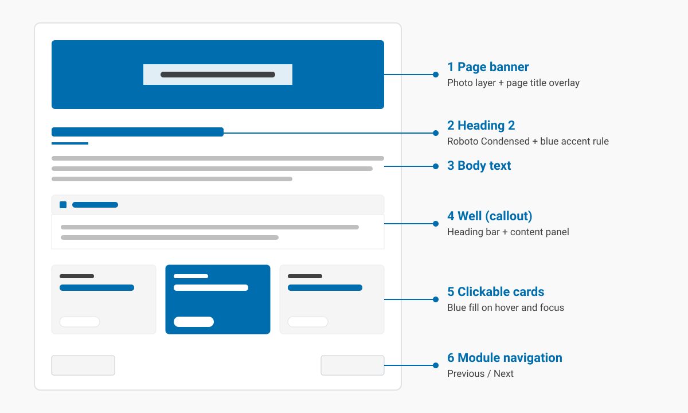

2. Designing for every learner
Designing for every learner
Accessibility isn't a layer added at the end. It's a set of choices made in every component.
Some learners read with a screen reader, some move through a page with the keyboard alone, and some zoom text to twice its size or more. Many more are reading on a phone, in bright light, or at the end of a long day. A course built to the WCAG 2.2 AA standard works for all of them, and it's easier for everyone else to use too.
Colour and contrast
Text needs enough contrast with its background to be read comfortably. The standard asks for a ratio of at least 4.5:1 for body text, and 3:1 for large text and interface parts such as borders and focus outlines. Every colour pair in this course has been checked against that formula.
| Colour | Used for | Contrast |
|---|---|---|
| Brand blue #006DAE | Headings, links, card hover | 5.53:1 |
| Dark blue #00557F | Link hover | 8.06:1 |
| Black #000000 | Body text | 21:1 |
| Grey #3F4041 | Captions and credits | 10.4:1 |
| Focus blue #005FCC | Keyboard focus outline | 5.98:1 |
Colour is also never the only signal. Links in body text, like this one to the guidance on use of colour, keep their underline, so a learner who can't tell blue from black can still find them.
The power of the Web is in its universality. Access by everyone regardless of disability is an essential aspect.
Tim Berners-Lee, W3C Director and inventor of the World Wide Web
How a page is structured
Every page in this course follows the same structure, from the banner at the top to the navigation at the bottom. Select the diagram to enlarge it.

Headings do more than break up the text. Screen reader users move through a page by its heading outline, so a page that skips from a Heading 2 straight to a Heading 4 is harder to navigate, even if it looks fine.
Explore: six principles of accessible pages
Select each card to read about one principle.
Common questions
Why are headings in sentence case, not capitals?
Headings here are full sentences. Set in capitals, they read as shouting, they're harder to scan, and some screen readers spell them out letter by letter.
Why isn't the quote in italics?
Long runs of italic text are harder to read, particularly for learners with dyslexia or low vision. Italics are kept for short spans, such as the title of a book.
How is a callout built?
Every callout in this course is the same two elements, a heading and a content panel, so it looks and behaves the same wherever it appears:
<h4 class="box_heading wcag-well-heading">Note</h4>
<div class="box_content wcag-well-content">
<p>The one thing a learner must not miss.</p>
</div>Apply your learning
Open a page from a course you know and move through it using only the Tab key. Note where focus goes, whether you can always see it, and anything you can't reach. Spend about 10 minutes on this.